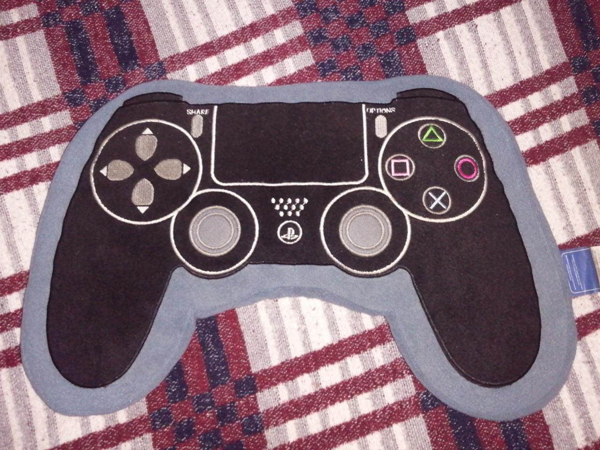
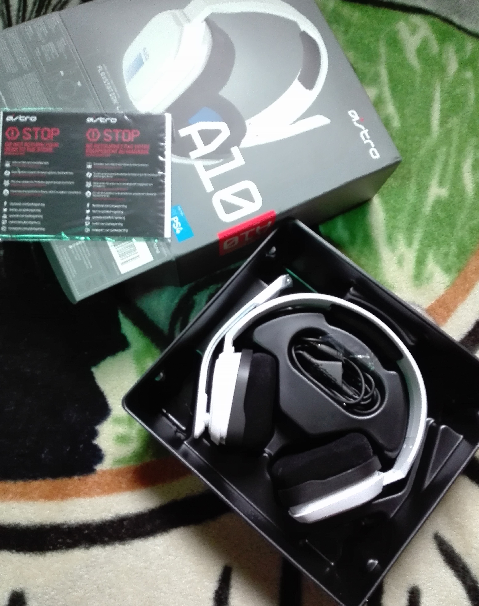
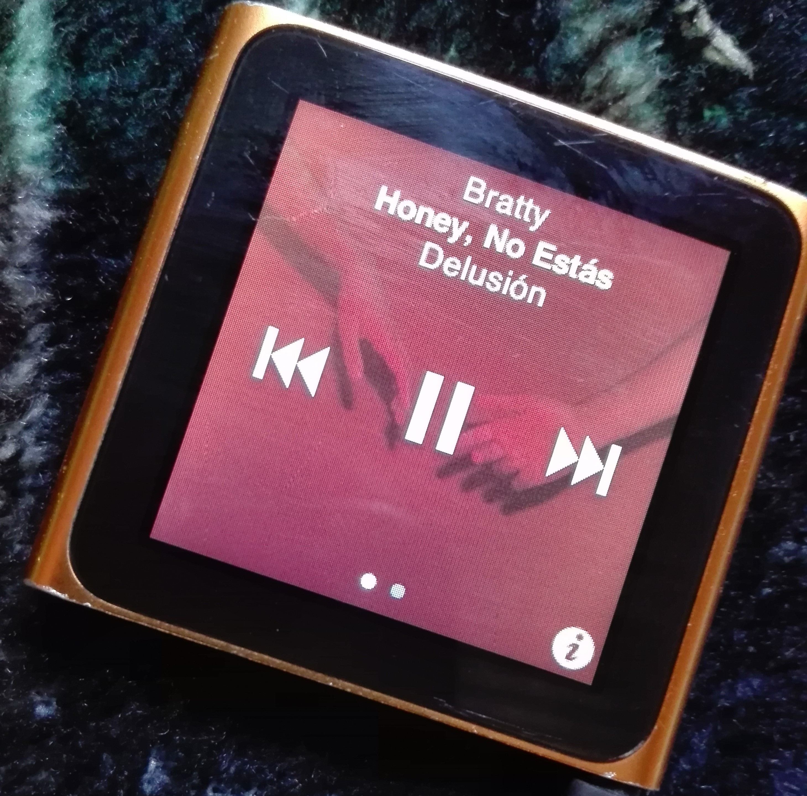
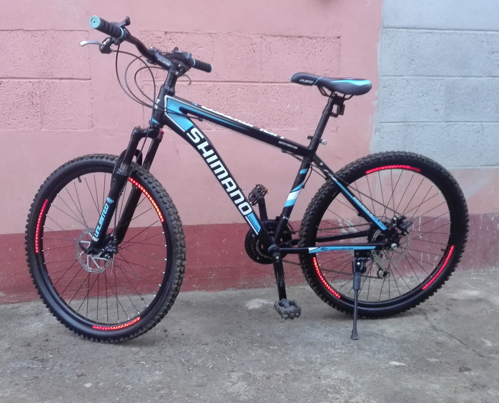
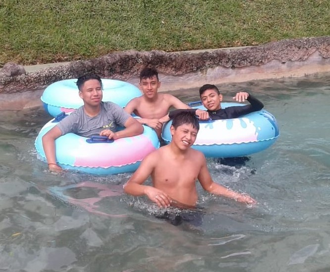
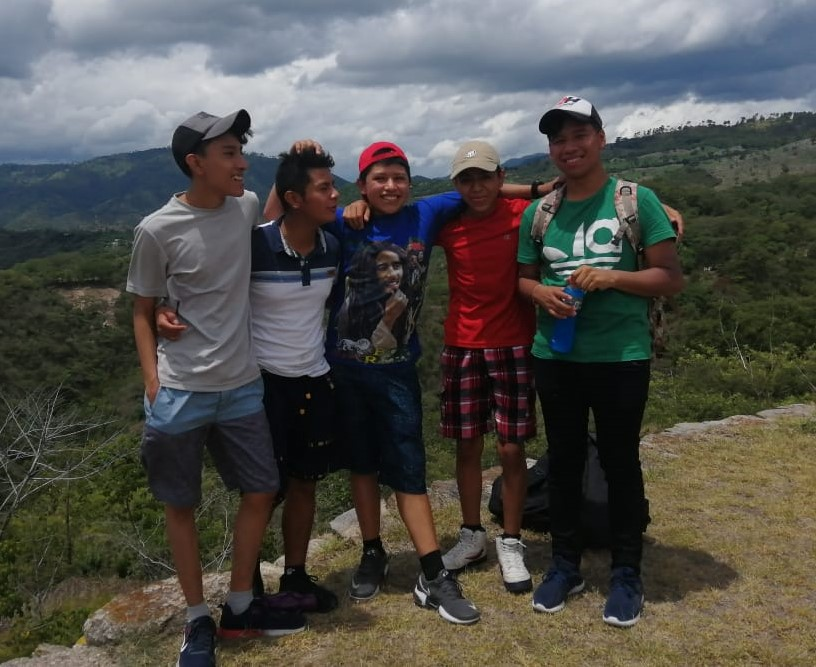
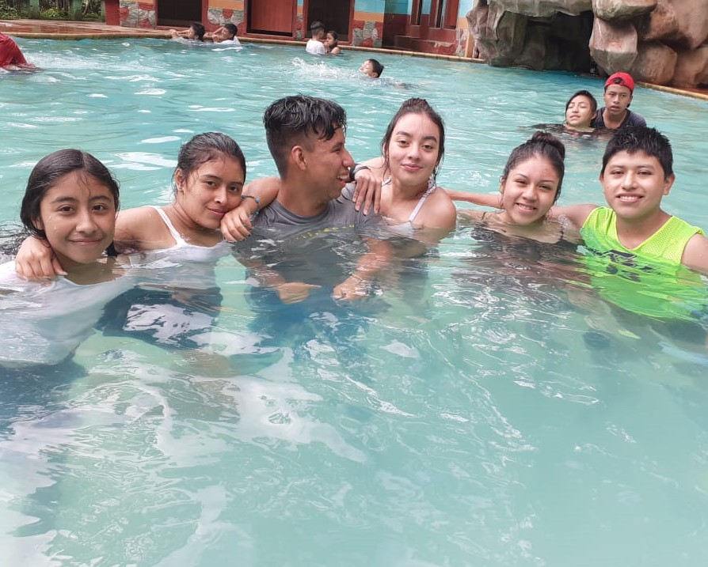
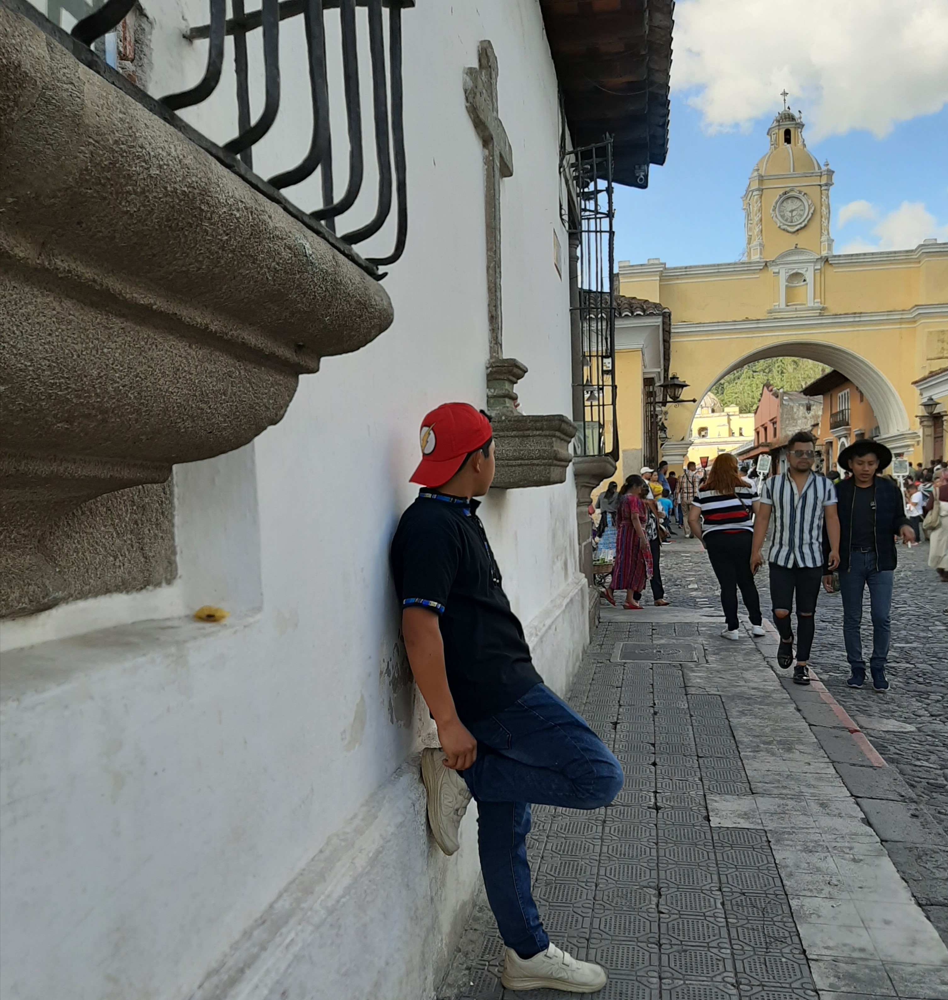
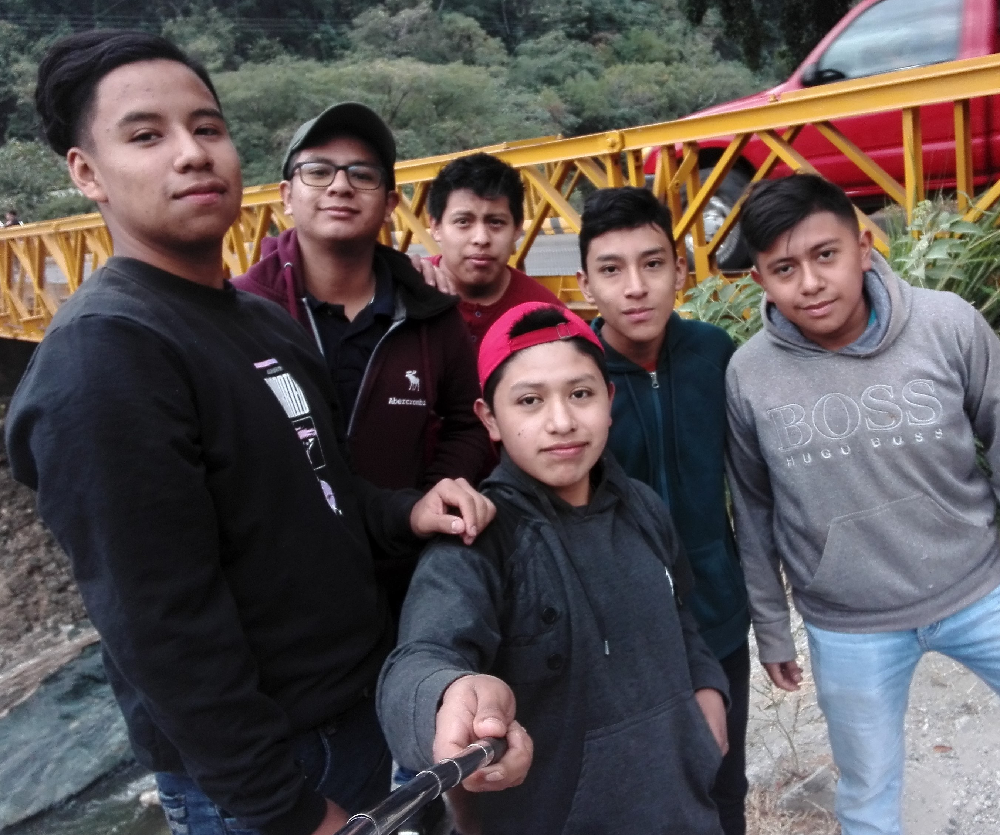

MISIÓN
Quiero ser una persona dedicada en todos los aspectos de la vida, esperando tener éxito en todo lo que realice por los que me rodean y por mí mismo, ser una persona capaz de realizar todo lo que me proponga, graduarme con éxito del colegio, cumplir todos mis propósitos educativos, así mismo mis propósitos personales y familiares, proponiéndome día a día una pequeña meta para mejorar como persona, pensando en un buen futuro con lleno de posibilidades, tratando siempre de aprovechar cada oportunidad que se me presente con la mejor actitud posible.Volver al Inicio
VISIÓN
Quiero ser un profesional de éxito y excelencia capaz de aportar cosas positivas a mi familia, mis amigos a la sociedad en general poniendo en practicar todos los valores posibles tanto personales religiosos como profesionales, llegar a ser un joven emprendedor y exitoso, pensando siempre en cómo ayudar los demás y siendo siempre honesto en todo lo que realice.Volver al Inicio
| Metas | Estrategias | ||
|---|---|---|---|
| Ganar y aprobar todos mis exámenes | Estudiar y poner atención en clase | Hacer todas mis tareas | Ser puntual en cada curso para no tener ningún inconveniente |
| Cumplir con mis prácticas supervisadas | Debo de ser responsable y disciplinado | Cumplir con cada cosa que se me pida en la empresa | Ser puntual en la hora de entrada |
| Cumplir con mis prácticas supervisadas | Entregar todas las actividades a tiempo | Colaborar con el colegio en todo lo que se me pida | Ganar todos los cursos |
| Metas | Estrategias | ||
|---|---|---|---|
| Hacer ejercicio y mantenerme con buena salud | Organizándome bien para tener tiempo para ejercitarme | Comiendo saludable | Ejercitar cuando tenga tiempo y hacerlo correctamente |
| Conseguir un trabajo | Graduarme para contar con un título universitario | Aplicar a una plaza, ingresar solicitud de trabajo o empleo en empresas donde pueda aplicar | Ser amable y demostrar interés por el puesto |
| Seguir estudiando en la universidad | Contar con un trabajo para poder pagar mis estudios | Organizar mi tiempo y dinero | Ponerme mucho empeño para poder lograr mi objetivo |
| Metas | Estrategias | ||
|---|---|---|---|
| Comprarme un Setup Gamer | Ahorrar | No malgastar el dinero | Trabajar arduamente |
| Abrir una tienda online | Organizar mi tiempo para diseñarla y programarla | Tener un capital para empezar | Tener claro que productos vender |
| Viajar a México | Tramitar mi pasaporte | Ahorrar dinero | Pensar bien a lo que voy |
Autobiografia
Mi nombre es Bernardo Emiliano Canas Calán tengo 19 años de edad, nací en San Martín Jilotepeque, el 21 de Octubre
de 2002. Desde la niñes viví en Sácala las Lomas perteneciente a San Martin Jilotepeque, a los seis años ingrese
a la Escuela Oficial Rural Mixta donde estudiaría los seis años de primaria al terminar la primaria deje de
estudiar por un año poniéndome a trabajar todo un año ayudando en mí hogar con algunos gastos, otras cosas
y problemas que se presentaban en ese tiempo. Un año después retomaría mis estudios de nivel básico en el
Instituto Nacional Anibal Alburez Roca el cual se encuentra en San Martin Jilotepeque, donde conocí muchas
personas, hice varios amigos de los cuales a prendí muchas cosas, como descubriendo mi amor por el baloncesto,
fueron tres años muy valiosos para mí porque fueron parte fundamental de mi crecimiento tanto académico como
personal. Termine graduándome cerrando el ciclo básico exitosamente.
No tenía muy claro la carrera la cual seguir estudiando porque en realidad me gustan muchas cosas como cocinar,
nadar practicar el ciclismo de montaña (MTB) jugar baloncesto entre otras cosas más. Ya decidido de la carrera
que seguiría, empecé mi diversificado en el colegio Liceo Integral Científico En Computación “ICC” donde estoy
cursando actualmente la Carrera de Bachillerato Industrial y Perito En Informática Con Especialidad En Computación
una carrera de la cual no me arrepiento de haberla elegido ya que me gusta mucho y creo que soy bueno en ella.
Actualmente estoy en la etapa final de mi carrera, debo de esforzarme para poder graduarme, obteniendo así un
título universitario convirtiéndome en un profesional ante la sociedad y si Dios me lo permite dentro de poco
ya esté trabajando arduamente, así poder ayudar mi madre quien ha dado todo su esfuerzo, apoyo emocional y
económico para poder formarme como persona.Volver al Inicio
Linea de Tiempo
Logo y significado
1:La bicicleta: - Representa mis ganas de seguir adelante
-Viajar por el mundo.
2:La pelota de baloncesto: - Representa mi pasión por este deporte y lo mucho que me gusta.
- Me ayuda a desestresarme y relajar mí mente.
3:La Computadora: - Representa lo mucho que me gusta trabajar con ellas
- También Demuestra el interés que tengo en saber cómo funciona cada componente de la misma.
Volver al Inicio
| Fortalezas | Oportunidades | Devilidades | Amenazas |
|---|---|---|---|
| -Carácter Fuerte Soy una persona de carácter fuerte porque trato de cumplir mis promesas y demuestro decisión |
-Poder seguir estudiando -Poder seguir estudiando Quiero ahorrar y poder pagarme la universidad y seguir estudiando lo que consigne mi carrera |
-Frustración estar haciendo algo, una tarea u otra cosa si no alcanzo el objetivo del mismo, la dejo de hacer por un tiempo |
-No ser feliz Siempre he tenido el miedo de no poder ser feliz por diversas cosas que me pasan en la vida más sin embargo trato de no ponerle tanta importancia a lo malo |
| -Autoestima Se que soy una persona con autoestima alta porque siempre le veo el lado bueno de la cosa sin importar que tan mal me valla |
-Ser Feliz Tratar de ser feliz poniéndole mucho empeño en lo que realice en adelante |
-Falta de modales A veces se me hace algo difícil respetar a los demás si no tienen razón en lo que dicen o hacen |
-Negatividad No me agradan tanto las personas con actitud negativa, ya que pueden trasmitirlo y eso me afectaría en cierto punto |
| -Autoconfianza Me considero una persona que siempre está segura de lo que dice y que demuestra firmeza en su palabra |
-Conseguir Trabajo Conseguir un trabajo para poder ayudar a mi familia y también para mejorar como persona |
-Conformista Hay momentos en los cuales soy una persona que se conforma con lo que tiene y hace, pero viéndolo bien es un punto malo de mí |
-No poder decir lo que pienso No decir las cosas como son a veces es mi problema. |
| -Facilidad de Palabra Soy una persona a quien se le hace algo fácil tomar la palabra públicamente mostrando mi punto de vista o dando opción acerca de |
-Pereza Tengo un poco de problema al hacer las cosas porque soy una persona que se distrae muy rápido con lo que sea, lo que provoca que no realice ciertas actividades |
-Desempleo En Guatemala hay mucho desempleo y eso me indica que si quiero un puesto de trabajo debo de poner mucho de mi parte para poder conseguirlo |
| Edad | Aspectos que pase |
|---|---|
| 1 año | Me dio Varicela |
| 3 años | Me dio gripe y fiebre (Muy fuerte) |
| 4 años | Me Rompí el brazo derecho por estar aprendiendo a manejar bicicleta |
| 5 años | Me dio fiebre muy fuerte que me desmaye |
| 8 años | Me Rompí el brazo izquierdo por estaba jugando arriba de un árbol |
| 12 años | Dolor de cabeza muy fuerte |
| 15 años | Me golpeé la rodilla jugando Baloncesto |
| 17 años | Me dio toz seca |
| 19 años | Me ataco una fuerte gripe, fiebre y dolor de cabeza |
| Grado | Donde estudie |
|---|---|
| Párvulos | Escuela Oficial Rural Mixta Sácala Las Lomas |
| Primaria | Escuela Oficial Rural Mixta Sácala Las Lomas |
| Básicos | Instituto Aníbal Alburez Roca |
| Diversificado | Colegio Liceo Científico en Computación ICC |
| He aprendido a dar mantenimiento a las computadoras antes de ingresar al colegio |
|---|
| He aprendido a programar no solo con los maestros si no que me he puesto a investigar para ampliar mis conocimientos y cosas así |
| Se cocinar algunas comidas |
| Plato | ¿El por qué me gusta? |
|---|---|
| Kak iq | Me gusta mucho porque mi mama siempre lo prepara para mi cumpleaños |
| Pizza | Me recuerda mucho a mis amigos ya que siempre la comíamos al salir de clases |
| Lasaña | Me encanta porque se prepararla y porque compartir |
| Las tostadas de Pico de Gallo | Me gusta mucho porque mi hermana las prepara cuando nos reunimos todos en casa |
| Bebida | ¿El por qué me gusta? |
|---|---|
| Atol de Elote | Me gusta mucho porque mi mamá siempre me deja cuando sale a vender |
| Agua pura | Me gusta poque me mantiene fresco mientras tareas u otra cosa |
| Gaseosas | Me gusta todo tipo de gaseosas porque su sabor es rico y refrescante |
| Jugos | Tiene un sabor muy rico y eso me agrada |
| Objetos | Porque valen lo que Valen | Objeto |
|---|---|---|
Teléfono |
Le tengo mucho cariño a mi teléfono ya que me costó algo de trabajo comprármelo | |
Una Almohada |
Quiero mucho a esta almohada porque me lo regalo mi hermana en mi cumpleaños No.17 |  |
Audífonos |
Le tengo mucho aprecio a estos audífonos ya que me lo compre haciendo trabajitos que me salían y por fin los compre |  |
Ipod |
Este ipod lo quiero mucho porque mi hermano me lo regalo cuando cumplí 14 |  |
Bicicleta |
Aprecio mucho mi bieleta ya que me costó más de un año de ahorrar para poder comprarla |  |
| Lugar | Porque me gusta el lugar? | Imagen |
|---|---|---|
Xocomil |
Porque me encanta nadar |  |
Mixco viejo |
Me gusta porque puedes despejar tu mente caminando por las pirámides |  |
Balneario "La Cascada" |
Este lugar me gusta mucho porque trae muchos recuerdos con mis amigos |  |
Antigua Guatemala |
Me gusta caminar por sus calles |  |
Xemap Pachalum |
Un lugar que me encanta porque estas rodeado de naturaleza, lo cual me provoca tranquilidad |  |
En Casa |
No decir malas palabras |
En Casa |
No responderles mal a mis padres |
Al Salir |
No faltarle al respeto a nadie |
En la Iglesia |
Guardar silencio |
En Casa |
No salir desde de las 10PM |
En Casa |
No tomar nada que no sea de mío |
En Casa |
No Jugar con la comida |
En Casa |
No llegar borracho |
Mi Nawal
Keme: Es el símbolo de la muerte. Símbolo de la disolución final de todas las cosas, buenas y malas.
Significa tecolote y muerte. Es el renacimiento. Significado que se expresa a través de los sagrados granos
de Tz’ite’ o Palo de Pito. Es día propicio para pedir por la salud de los enfermos y para hacer ofrendas
porque progrese el negocio.
Keme. Es la energía de las personas que mueren de manera natural. Puede restar fuerza a una persona o fortalecerla.
Pronostica lo bueno y lo malo. Es la comunicación con las abuelas y abuelos a través de las candelas de cebo que
se ofrecen en las ceremonias. Prudencia y protección para evitar accidentes. Es el Juez Supremo de todas las
cosas. Nawal de la enfermedad y de la muerte.
Tiene un significado más allá de la muerte y representa el fin de ciclo de todas las cosas y no limitadas a la
vida del ser humano.
Cada fin de ciclo tiene un renacimiento por lo cual Keme también representa un nuevo comienzo.
Volver al Inicio
Sucesos Importantes el 21 de octubre de 2002 el día de mi nacimiento
1) 14 muertos al explotar un coche bomba junto a un autobús al norte de Israel
La explosión junto a un autobús de un coche bomba conducido por un terrorista suicida palestino ha causado la muerte a 14 israelíes, y ha herido a otros 50 en el norte de Israel. El autobús de línea circulaba cerca de la localidad de Pardes Hanna
2) Valencia acoge a artistas, paisajistas y arquitectos de todo el mundo
Interpretado como 'un nuevo fenómeno sociocultural y físico' y convertido en 'uno de los temas centrales de la técnica y el arte', el paisaje es objeto de estudio en el seminario que hoy se inaugura en el Colegio de Arquitectos de la Comunidad Valenciana. Escultores como Susumu Shingu, arquitectos como Javier Maderuelo o Daniela Moderini o paisajistas como Yoji Saaki o Stefan Tischer intervendrán en estas jornadas que se prolongarán hasta el 24 de octubre.
3) EE UU publica la norma citrícola y los primeros envíos saldrán el sábado
La norma definitiva que enuncia las nuevas condiciones para la importación de clementinas españolas a Estados Unidos apareció ayer publicada en el Federal Register (diario oficial estadounidense). Con esta publicación, y con la firma del protocolo que desarrolla esta norma y que ayer firmó el departamento estadounidense de Salud Animal y Vegetal (Aphis) con su departamento homólogo en el Ministerio de Agricultura, según informaron fuentes de este departamento, concluyen los trámites administrativos de este nuevo marco de comercio. Estados Unidos levantó el veto a las clementinas españolas el pasado martes.
Volver al Inicio